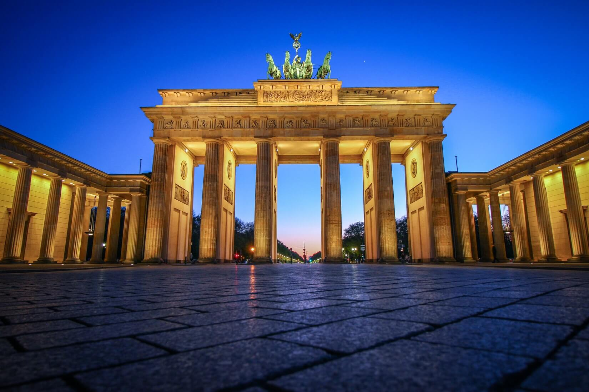
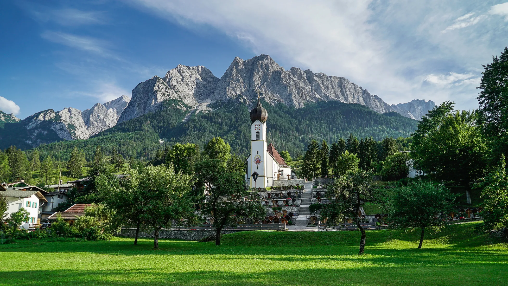

Explora Alemania
Conoce la historia, cultura, gastronomía y más...
Bienvenido a la página dedicada a Alemania. Este país es conocido por su rica historia, bellos paisajes y su impactante gastronomía. ¡Descubre más sobre este fascinante lugar!
Turismo
Alemania es famosa por su rica historia y su patrimonio cultural. Destinos clave incluyen Berlín (puerta de Brandenburgo, muro de Berlín), Múnich (fiesta de la cerveza Oktoberfest), y el valle del Rhin (castillos medievales).
Geografía
Alemania tiene una geografía diversa, con bosques (Bosque Negro), montañas (Alpes bávaros) y ríos importantes como el Rin y el Elba.
Gastronomía
Platos como el currywurst, schnitzel, pretzels y sauerkraut son emblemáticos. La cerveza es muy popular, especialmente en el sur del país.
Da clic aquí